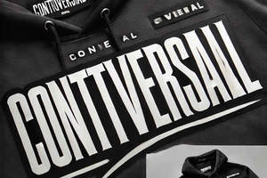

Trade Mark Journal No.2025/009 28 February 2025
UK00004160736 15 February 2025 (18,25)

- Class 18
- Bags for sports clothing; Pouches; Handbags for men.
- Class 25
- Tracksuits; Tracksuit bottoms; Tracksuit tops; Jerseys [clothing]; Sweatshirts; Open-necked shirts; Hoodies; Jackets [clothing]; Anoraks [parkas]; Tank-tops; Jackets being sports clothing; Men's and women's jackets, coats, trousers, vests; Hooded sweat shirts; Short-sleeved T-shirts; Waistcoats [vests]; Hooded sweatshirts; Balaclavas; Sweatpants; Short-sleeved shirts; Sport shirts; Shirts; Jackets (Stuff -) [clothing]; Stuff jackets [clothing]; Long-sleeved shirts; Leggings [trousers]; Gabardines [clothing]; Quilted jackets [clothing]; Sleeveless jerseys; Jogging outfits; Shorts [clothing]; Sleeveless jackets; Jogging bottoms [clothing]; Sports shirts; Trenchcoats; Hooded pullovers; Jackets; T-shirts; Tee-shirts; Cagoules; Warm-up jackets; Sportswear; Blazers; Waistcoats; Headbands [clothing]; Headbands for clothing; Wristbands [clothing]; Turtleneck shirts; Sweat-absorbent underwear; Jumpers [pullovers]; Sports jackets; Gymwear; Denim jackets; Sneakers; Sweat jackets; Camouflage jackets; Clothes for sport; Sleeved jackets; Sweat shirts; Trousers shorts; Fleece jackets; Trousers; Knitwear [clothing]; Overcoats; Overshirts; Rugby jerseys; Pullovers; Sleeveless pullovers; Trousers for sweating; Sheepskin jackets; Hoods [clothing]; Clothes for sports; Capes (clothing); Blouson jackets; Gloves [clothing]; Gloves as clothing; Collars [clothing]; Bottoms [clothing]; Sweatbands; Collared shirts; Polo shirts; Cardigans; Clothes; Cashmere clothing; Jogging sets [clothing]; Sports jerseys; Sneakers [footwear]; Trainers; Trainers [footwear]; Training shoes; Gym boots; Gym shorts; Gym suits; Sport shoes; Clothing for men, women and children; Footwear for men and women; Underwear for women; Clothing for children; Underclothing for women; Footwear for women; Footwear for men; Coats for women; Coats for men; Socks for men; Trousers for children; Clothing for babies; Clothing for infants; Outerclothing for men; Shoes for infants; Ladies wear; Girls' clothing; Socks for infants and toddlers; Clothing; Women's clothing; Athletic clothing; Sports garments; Clothing for leisure wear; Clothing for sports; Sports clothing; Outerclothing for girls.
Safiya Bashir Ahmed